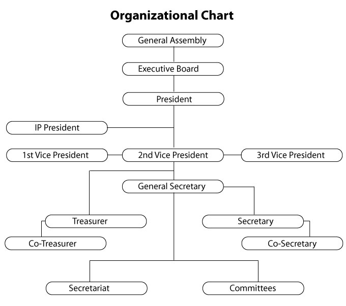

Organizational Structure

Organizational Structure
The highest policy making body of the MCCI is its General Assembly which generally meets on an annual basis.
The executive committee is the governing body of the chamber. it is composed of President, First Vice president, Second Vice President, Third Vice President (3 three vice presidents from commerce, industry and small industry each), Secretary General, Treasurer, Secretary, Co-treasurer, Co-Secretary and other 16 Executive Members.. Three members are nominated in the executive member committee. Among them one member must be a Women Entrepreneurs and there is a provision of specially inviting a Executive member in Executive body. The immediate past president is an ex-officio member of the executive committee. The executive member is formed by election every two year. The President and executive committee members are elected during the general assembly meetings.
The executive committee formulates and implements the plans and programs of the chamber. To make the work of executive committee effective, different sub-committees also formed as per different trades, so they can provide proper feedback and advise to the executive committee to formulate policies, plans, programs and budget for each financial year.
The executive committee is assisted by following council and sub-committees.
Committee:
- Advisory Committee
Council:
- District Employer's Council
Committee:
Women Entrepreneurs Development
Sub-Committee:
- Hetauda Residential Protection
- Business Tax Management
- Agriculture promotion
- Tax
- Small & Cottage Industries Development
- International Relation Management
- Health and Social Management
- Membership Increment Management
- Market Management
- Crusher Industries Management
- Price Determination Management
- Construction
- Transportation Management
- Productivity, Quality and Environment
- OSS Management
- Training & Commodity association Coordination Management
- Tourism Development
- Child welfare